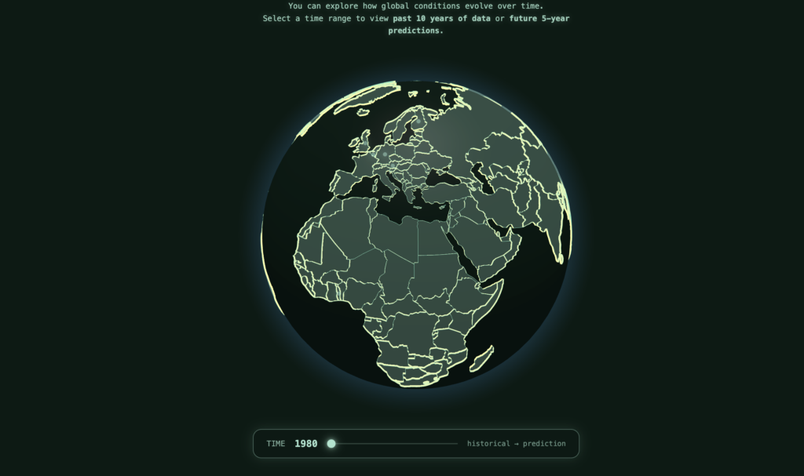
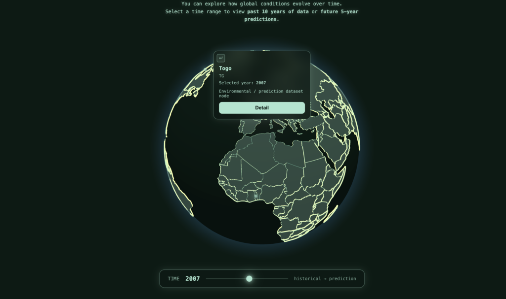
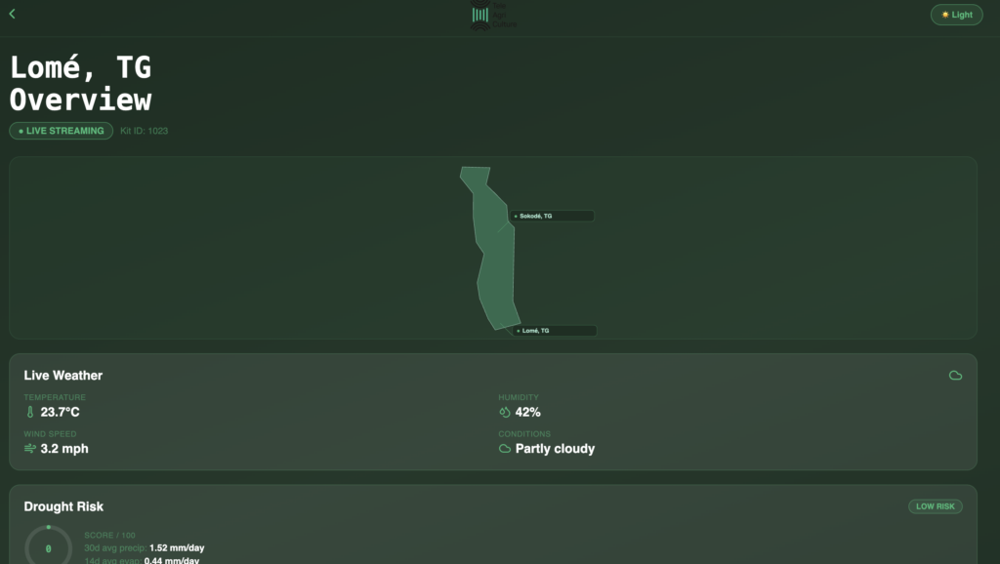
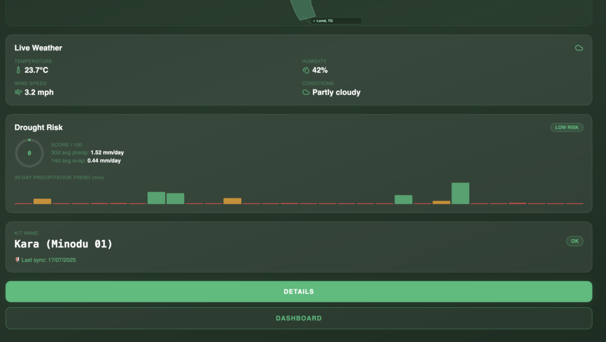
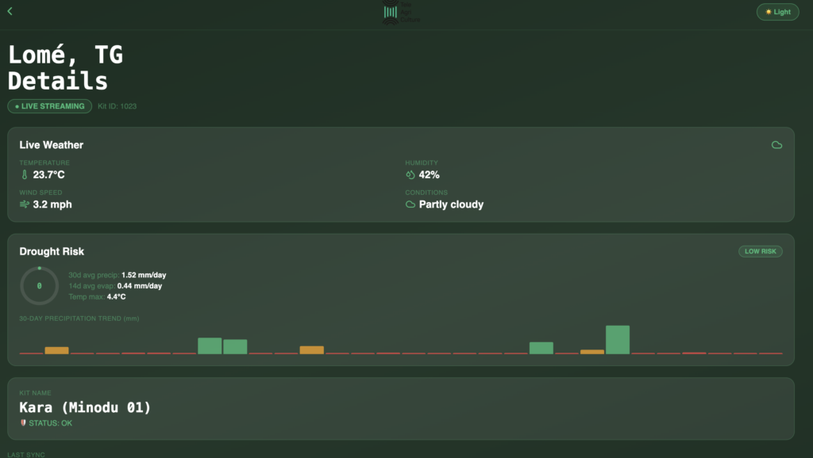
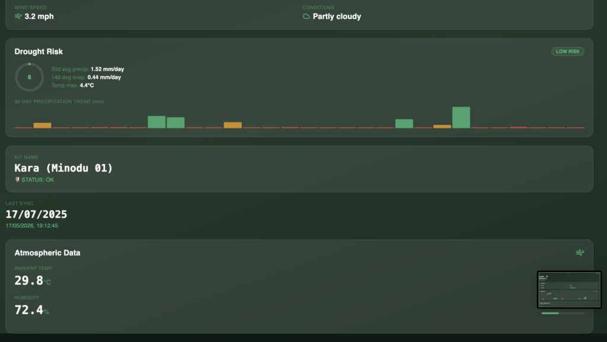
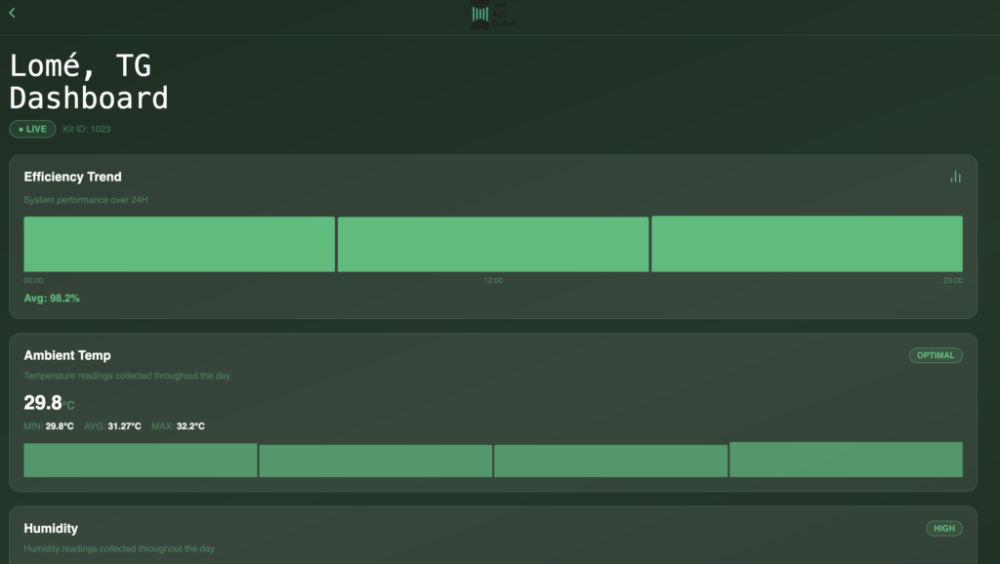
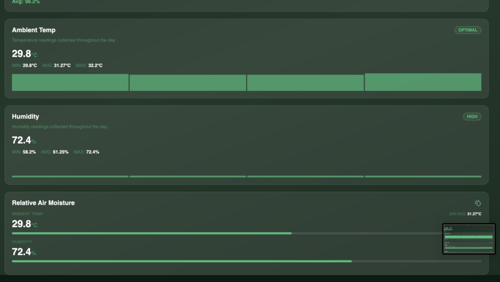
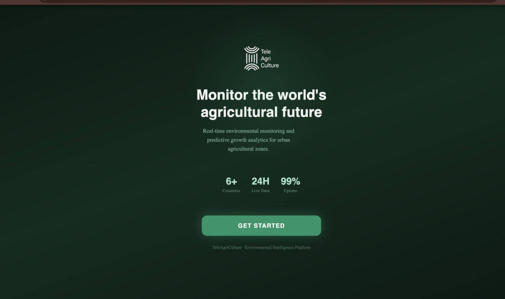
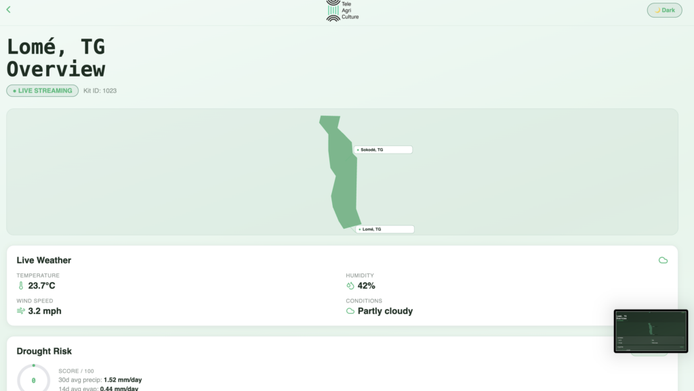

Interactive System
The final outcome of the project focuses on the development of the globe-based data visualisation interface, which acts as the main entry point for exploring global environmental datasets within the TeleAgriculture system.
This section was primarily my responsibility, and it was developed after the final Figma prototype was reviewed and discussed with Julian. Based on this feedback, we decided to prioritise the implementation of the interactive globe visualisation as the core functional layer of the system, as it effectively connects geographical context with environmental data narratives.
The globe interface was built as a real-time interactive mapping system, allowing users to explore global environmental conditions through spatial navigation. The visual design follows a dark, radar-like aesthetic, with neon green highlights representing active data nodes. These nodes are positioned on countries across the globe and act as entry points into deeper datasets.

Time-Based Data Interaction
A key interaction feature of this system is the time slider located at the bottom of the interface, which allows users to move between historical data and predictive future models. This design decision was directly informed by the collaboration with Omar and Vidula. Omar’s work on data collection and archiving provided the historical dataset structure, while Vidula’s predictive modelling enabled the integration of future forecasting. By embedding both datasets into a single temporal interface, the globe becomes a dynamic system that visualises change over time rather than static geographic information.
Country-Level Interaction & Data Exploration
When users click on a highlighted country node, the system transitions into a country-specific data view, where a contextual information panel appears above the globe.

This popup card presents key information including:
- The selected country name and ISO code
- The selected year (linked directly to the global time slider)
- A dataset classification label (Environmental / prediction dataset node)
- A primary action button leading to deeper data exploration (“Detail”)
This interaction design creates a clear hierarchical flow:
Global overview → Country selection → Temporal dataset exploration → Detailed data view
The popup system was designed to maintain spatial awareness, ensuring that users always understand their position within the global dataset while still being able to access detailed information.
City-Level Data Exploration (Design Refined by Nana)

This section was originally designed as part of the interaction flow I developed for transitioning from the globe interface into country-specific dashboards. It defines the structural logic of moving from global selection to city-level environmental data nodes, where users can explore individual urban monitoring points such as Baldwinsville (USA).
After I passed on the initial dashboard and interaction structure, Nana further refined and developed this section, improving both the visual hierarchy and interaction clarity while maintaining the overall design language of the system.
In the refined version, each city node is presented as an interactive data point within a geographically isolated country view. When selected, the node opens a contextual information panel that provides key operational controls and identity information, including:
- City name and classification (CITY NODE)
- Access options for Detail View and Dashboard View
- Navigation controls such as close and back functions
To enhance spatial awareness during deep navigation, a miniature globe preview is also integrated into the interface, allowing users to maintain a sense of global positioning while focusing on localised data exploration.
This refinement strengthens the overall system by improving usability and ensuring consistency across hierarchical data levels, bridging global-scale visualisation with city-level analytical interaction.
Dashboard System (Nana’s Contribution & Integration)
Following the development of the globe-based visualisation system, the project was extended through the creation of a detailed data dashboard interface, which was developed by Nana. This stage was built directly on top of the interaction flow I designed, where users select a country on the globe and enter a contextual data environment through the popup system.
The dashboard system acts as the second layer of the data experience, translating geographic selection into detailed environmental and urban-scale insights. While I focused on the global and country-level visualisation, Nana developed the deeper analytical interface, ensuring continuity across the entire user journey.
Country Overview

The country overview is triggered after selecting a country node from the globe interface. It presents a structured breakdown of regional environmental conditions, starting from a city-level overview map with key monitoring locations.
At the top of the interface, the system displays the selected region name (e.g. “Lomé, TG Overview”) alongside a LIVE STREAMING status indicator and a unique Kit ID, reinforcing the idea of real-time sensor connectivity. A light mode toggle is also included, supporting flexible visual accessibility.
The central map focuses on the selected country (Togo), highlighting key urban monitoring nodes such as Lomé and Sokodé. This ensures continuity from the globe interaction, where users previously selected the country at a global scale.
Environmental Data Modules

Below the map, the dashboard presents multiple structured data blocks:
- Live Weather Panel: showing real-time temperature, humidity, wind speed, and general weather conditions
- Drought Risk Assessment: a scored environmental risk system visualised through a circular indicator and a 30-day precipitation trend chart
- Sensor Status & Sync Information: displaying device health, last synchronisation date, and system status indicators
These modules transform abstract environmental datasets into readable and actionable insights, maintaining a balance between scientific accuracy and visual clarity.
Data Drill-down System (Detail & Dashboard Views – Nana’s Implementation)
Following the country-level interaction design that I developed within the globe visualisation system, Nana further extended the interface into a more detailed data drill-down structure, consisting of two key layers: the Raw Data View and the Dashboard View. These pages are accessed through the “Detail” and “Dashboard” actions within the country overview interface, completing the full interaction pathway from global exploration to in-depth environmental analysis.
Raw Data View (Environmental Data Layer)


The Raw Data page represents the first level of detailed information after selecting a country node. It maintains the same visual language as the rest of the system, using a dark, high-contrast interface with neon green highlights to reinforce real-time monitoring.
At the top of the interface, the system displays the selected location (e.g. “Lomé, TG Details”) alongside a LIVE STREAMING indicator and device ID, reinforcing the idea of continuous environmental data flow.
The page presents multiple structured data modules:
- Live Weather Panel: displaying real-time temperature, humidity, wind speed, and weather conditions
- Drought Risk Assessment: including risk scoring, precipitation averages, evaporation rates, and a 30-day precipitation trend visualisation
- Device & Sync Information: showing system status, last synchronisation timestamps, and operational health indicators
- Atmospheric Data Layer: introducing deeper environmental metrics such as ambient temperature and humidity
Additionally, a miniature preview of the full interface is retained in the corner, supporting spatial orientation during navigation.
This layer focuses on exposing raw environmental sensor outputs, allowing users to inspect data at a granular level before moving into analytical interpretation.
Dashboard View (Analytical Layer)


The Dashboard page builds on the raw data layer by transforming environmental readings into structured analytical summaries. It is designed for interpretation, comparison, and system-level monitoring rather than raw inspection.
The interface includes several key analytical modules:
- System Efficiency Trend (24H Performance): visualising system stability over time with an average efficiency indicator (Avg: 98.2%)
- Ambient Temperature Analytics: summarising minimum, average, and maximum values alongside a 24-hour distribution graph
- Humidity Analytics Panel: presenting similar statistical breakdowns with a clear “HIGH” status indicator
- Relative Environmental Comparison: a dual-metric visualisation comparing temperature and humidity trends side by side
This layer shifts the system from data observation to data interpretation, enabling users to understand environmental conditions at a glance rather than through raw values.
Landing Interface (System Entry Page – Nana’s Implementation)
In addition to extending the dashboard system, Nana also designed the entry interface of the TeleAgriculture web application, which functions as the first interaction point for users entering the platform. This page establishes the visual identity, system purpose, and interaction tone before users access the main globe-based visualisation system.

A key feature introduced in this stage is the theme switching capability, allowing users to toggle between a dark and light interface mode. This adds accessibility and flexibility to the system while maintaining the same core visual language across different viewing conditions.

Final Outcome Summary – TeleAgriculture System
The final outcome of the TeleAgriculture project is a multi-layered interactive web application that combines global data visualisation, environmental analytics, and a hardware-based monitoring ecosystem. The system was developed collaboratively, with each team member contributing to different layers of the platform. My primary focus was the globe-based visualisation system and interaction architecture, while Nana developed and extended the dashboard, data analysis layers, and entry interface, ensuring a coherent end-to-end user experience.
The final system operates as a unified digital ecosystem that connects geographical exploration, real-time environmental data, and predictive analytics through a consistent visual and interaction language.
Core System Structure
The platform is structured around a progressive interaction flow:
Landing Page → Globe Visualisation → Country Selection → Data Popup → Raw Data View → Analytical Dashboard
This structure allows users to gradually move from a global overview of agricultural conditions into highly detailed, location-specific environmental data.
Globe-Based Visualisation (My Contribution)
The central component of the system is the interactive 3D globe interface, which I designed and implemented using React and react-globe.gl. This interface allows users to explore global environmental conditions through spatial interaction.
Key features include:
- A dark, radar-inspired visual style with neon green data nodes
- Clickable country markers representing environmental data locations
- A time slider enabling transitions between historical data and predictive future models
- A country-level popup system providing contextual dataset access
This layer establishes the spatial foundation of the system, translating abstract environmental datasets into a navigable global interface.
Dashboard & Data Layers (Nana’s Contribution)
Building on the interaction structure, Nana developed a series of structured analytical dashboards that extend the user journey into deeper levels of data interpretation.
These include:
- Country Overview Dashboard: real-time weather, drought risk analysis, and sensor status
- Raw Data View: detailed environmental readings and device-level information
- Dashboard Analytics View: system performance, temperature/humidity statistics, and comparative trends
- City-Level Data Exploration: refined node-based navigation with contextual popups
Together, these layers transform raw sensor outputs into structured, readable environmental intelligence.
System Entry Interface
Nana also designed the landing page, which introduces the platform’s identity, key statistics, and system purpose. It establishes the branding of TeleAgriculture as a global environmental intelligence platform, and provides a clear entry point into the system through a “GET STARTED” interaction.
Design Philosophy
Across all modules, the system maintains a consistent design language based on:
- Dark/eco-tech visual identity
- Neon green highlights for live data states
- Glassmorphism-style UI components
- Hierarchical data storytelling (global → local → analytical)
This ensures that complex environmental datasets remain visually accessible and structurally intuitive.
Final Outcome
Overall, TeleAgriculture functions as a complete digital ecosystem for environmental monitoring and agricultural intelligence, combining:
- Spatial data exploration (globe interface)
- Structured analytical dashboards
- Real-time sensor integration
- Hardware procurement system
- Predictive environmental modelling
The final prototype demonstrates how environmental data can be transformed into an interactive, multi-layered storytelling system, bridging geography, technology, and ecological awareness within a single coherent platform.
Link to project GitHub for all the code: https://github.com/nanashireen/Creative-Industries/tree/main/src
Link to Final PPT: https://canva.link/rzbq3zwhv52m2ld